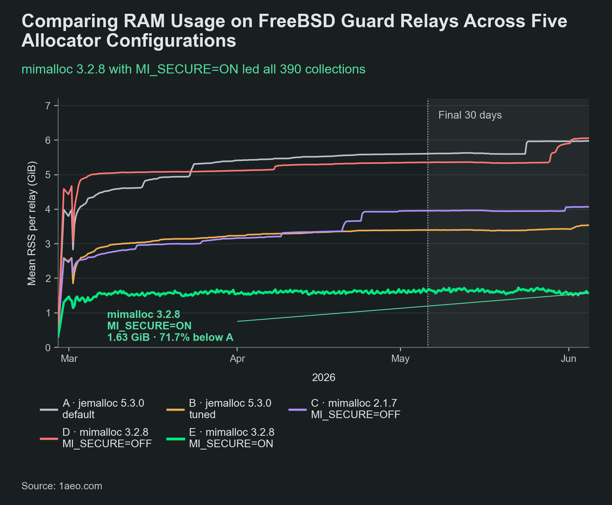
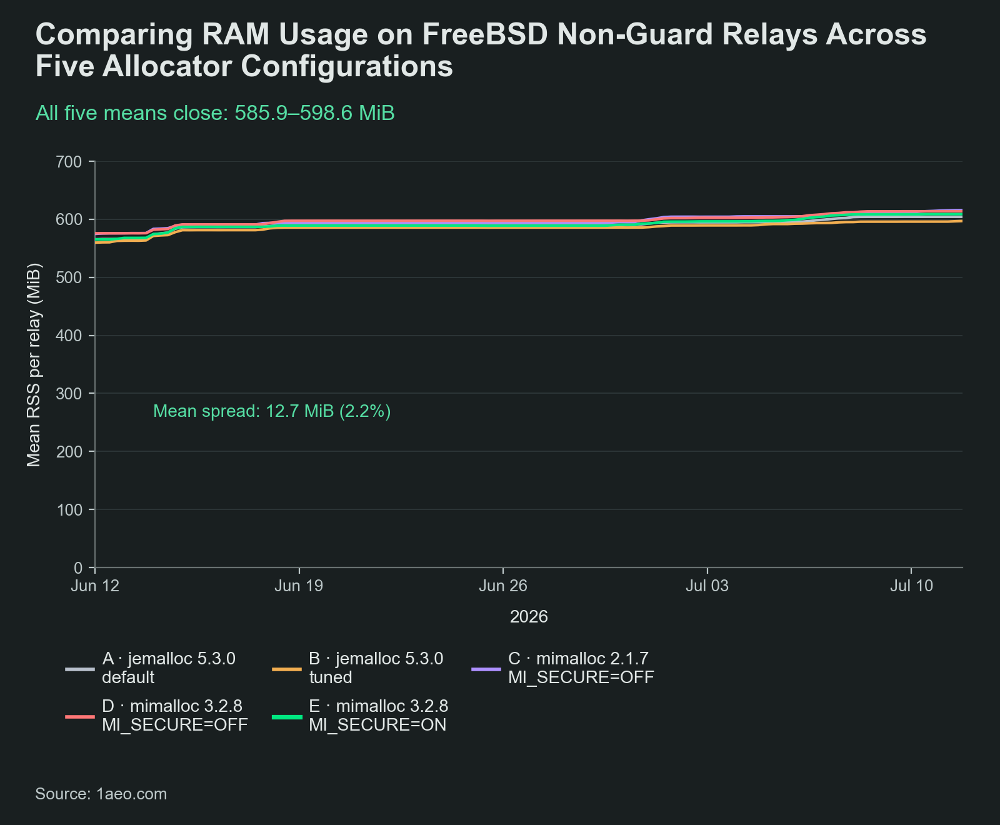
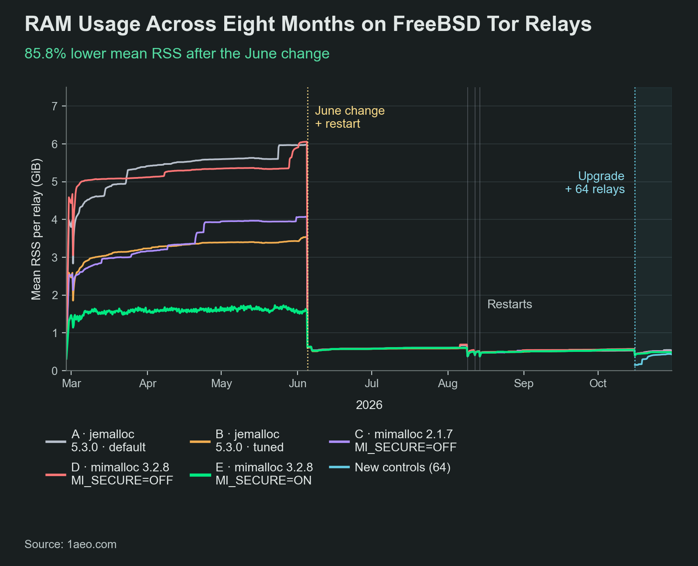

FreeBSD Guard Memory: mimalloc 3.2.8 (MI_SECURE=ON) Group Wins with About 70% Lower RSS
Version and build scope. FreeBSD 15.0, later FreeBSD 15.1; base jemalloc 5.3.0 in both phases. Custom builds: mimalloc 2.1.7 with MI_SECURE=OFF; mimalloc 3.2.8 with MI_SECURE=OFF or MI_SECURE=ON. MI_SECURE is a mimalloc build option, enabled in CMake with -DMI_SECURE=ON.
- mimalloc 3.2.8 with
MI_SECURE=ONwon the production Guard comparison. Lowest mean resident set size (RSS) at all 390 collections; in the final 30 days, 1.63 GiB per relay versus 5.75 GiB per relay for default jemalloc 5.3.0—a 71.7% reduction. - With
DirCache 0, all five groups had similarly low memory use. Their means were about 586–599 MiB per relay, only 12.7 MiB apart.
We followed 32 production relays in five allocator groups: Guard operation with default DirCache 1, then non-Guard DirCache 0, all else equal for that role comparison.
Guard memory winner #

DirCache 1 on FreeBSD 15.0: 390 collections from February 27–June 4, 2026. A/B contain 7 relays each; C/D/E contain 6 each. Lines show group-mean RSS. The shaded May 6–June 4 window has 120 readings per relay: mimalloc 3.2.8 with MI_SECURE=ON averaged 1.63 GiB versus 5.75 GiB for default jemalloc 5.3.0, a 71.7% reduction; D/E = 3.37× uses the same window. RSS means resident set size; GiB uses 1,048,576 KiB. Dates are host-local. Open the full-size Guard line chart.mimalloc 3.2.8 with MI_SECURE=ON was the clear observed memory winner over months of production traffic. It led at every collection and on all 98 sampled calendar dates. All six relay-period averages were below every average in the other 26 relays.
How large was the gap? #
During May 6–June 4 on the FreeBSD 15.0 phase, mimalloc 3.2.8 with MI_SECURE=ON averaged 1.63 GiB. Default jemalloc 5.3.0 averaged 5.75 GiB; mimalloc 3.2.8 with MI_SECURE=OFF averaged 5.49 GiB, or 3.37 times the mean for mimalloc 3.2.8 with MI_SECURE=ON. Tuned jemalloc 5.3.0 and mimalloc 2.1.7 averaged 3.41 and 3.97 GiB.
| Configured allocator | Relays | Mean RSS, May 6–June 4 |
|---|---|---|
| jemalloc 5.3.0, default | 7 | 5.75 GiB |
| jemalloc 5.3.0, tuning requested | 7 | 3.41 GiB |
mimalloc 2.1.7 with MI_SECURE=OFF |
6 | 3.97 GiB |
mimalloc 3.2.8 with MI_SECURE=OFF |
6 | 5.49 GiB |
mimalloc 3.2.8 with MI_SECURE=ON |
6 | 1.63 GiB |
Our earlier allocator and DirCache studies reinforce the explanation: directory-cache allocation churn, amplified by allocator retention and fragmentation, is strongly supported as a major contributor to persistent high RSS.
Non-Guard / DirCache 0 #

DirCache 0 on FreeBSD 15.0, June 12–July 11, 2026: 120 six-hour readings per relay, excluding the first week after restart. The original group sizes remain 7/7/6/6/6. Lines show group-mean RSS; period means range from 585.9 to 598.6 MiB. The 12.7 MiB spread is 2.2% of the lowest mean. RSS means resident set size; MiB uses 1,024 KiB. Dates are host-local. Open the full-size non-Guard line chart.With DirCache 0, the five groups all looked good on average memory footprint in this workload: 585.9–598.6 MiB, a spread of just 12.7 MiB, or 2.2% of the lowest mean. That is a small practical difference compared with the Guard-period gaps.
| Configured allocator | Relays | Mean RSS, June 12–July 11 |
|---|---|---|
| jemalloc 5.3.0, default | 7 | 590.9 MiB |
| jemalloc 5.3.0, tuning requested | 7 | 585.9 MiB |
mimalloc 2.1.7 with MI_SECURE=OFF |
6 | 597.4 MiB |
mimalloc 3.2.8 with MI_SECURE=OFF |
6 | 598.6 MiB |
mimalloc 3.2.8 with MI_SECURE=ON |
6 | 591.9 MiB |
For non-Guard-only operation, base jemalloc 5.3.0 on FreeBSD 15.0 or 15.1 keeps maintenance simple without custom allocator builds or preloads.
Methods #
We compared the same 32 original relays, divided into groups of 7, 7, 6, 6 and 6. The headline windows are May 6–June 4 and June 12–July 11, with 120 six-hour readings per relay; the later window excludes the first seven days after restart. Groups follow recorded allocator configurations, and the ranking describes observed production RSS. Added relays remain separate.
Versions and build settings #
| Experiment scope | FreeBSD version | Allocator or Tor version |
|---|---|---|
| Guard and pre-upgrade non-Guard measurements | 15.0-RELEASE-p4 | Base jemalloc 5.3.0; default and tuned configurations |
| After the October 15 upgrade | 15.1-RELEASE-p5 | Base jemalloc 5.3.0 |
| Group C | 15.0, then 15.1 | mimalloc 2.1.7 with MI_SECURE=OFF |
| Group D | 15.0, then 15.1 | mimalloc 3.2.8 with MI_SECURE=OFF |
| Group E | 15.0, then 15.1 | mimalloc 3.2.8 with MI_SECURE=ON |
| Tor | 15.0 initially; 15.1 at closeout | Initial build script: 0.4.9.5; closeout: 0.4.9.14 |
MI_SECURE is a mimalloc compile-time option enabled with CMake’s -DMI_SECURE=ON; it does not describe a relay’s overall security or privacy. After changing allocators or upgrading Tor, verify that the intended allocator is loaded in the running process.
Full experiment timeline #

The same 32 original relays averaged 4.08 GiB in May 6–June 4 and 0.58 GiB in June 12–July 11: an 85.8% reduction, excluding the first seven days after the June restart. The later 64 additions are shown separately; the October 31 expansion to 200 relays falls after this frozen timeline’s midnight endpoint.
Supporting data #
Matched 30-day comparison #
Both matched windows are in the FreeBSD 15.0 phase, with base jemalloc 5.3.0 and requested mimalloc 2.1.7 / 3.2.8 builds. Each original relay contributed 120 readings to each window. Values are mean RSS in GiB per relay. Cohort labels describe intended configuration throughout.
| Cohort / intended configuration | Relays | May 6–June 4 | June 12–July 11 | Reduction |
|---|---|---|---|---|
| A — default jemalloc 5.3.0 | 7 | 5.751 | 0.577 | 90.0% |
| B — jemalloc 5.3.0, tuning requested | 7 | 3.413 | 0.572 | 83.2% |
| C — mimalloc 2.1.7 | 6 | 3.970 | 0.583 | 85.3% |
D — mimalloc 3.2.8 with MI_SECURE=OFF |
6 | 5.488 | 0.585 | 89.3% |
E — mimalloc 3.2.8 with MI_SECURE=ON |
6 | 1.628 | 0.578 | 64.5% |
| All original relays, weighted | 32 | 4.083 | 0.579 | 85.8% |
Earlier window: spread and peaks #
May 6–June 4; mean, median, 95th percentile (p95), and maximum across sampled relay observations, in GiB. These are descriptive distributions, not confidence intervals or peaks between samples.
| Cohort | Mean | Median | p95 | Sampled maximum |
|---|---|---|---|---|
| A | 5.751 | 5.254 | 7.815 | 7.829 |
| B | 3.413 | 3.361 | 3.602 | 4.377 |
| C | 3.970 | 3.607 | 5.607 | 5.632 |
| D | 5.488 | 5.208 | 6.114 | 7.871 |
E — mimalloc 3.2.8 with MI_SECURE=ON |
1.628 | 1.606 | 1.857 | 2.174 |
Full pre-upgrade low-memory interval #
Across June 5–October 15, the five configured cohorts averaged 556.9–578.4 MiB per relay. This FreeBSD 15.0 interval uses base jemalloc 5.3.0 and the same requested mimalloc 2.1.7 / 3.2.8 builds. It contains 531 collection times, including startup and three August restarts; it differs from the matched 30-day comparison above. Values below are MiB.
| Configured cohort | Relays | Mean RSS | Highest sampled relay RSS |
|---|---|---|---|
| A — original control | 7 | 560.1 | 998.9 |
| B | 7 | 556.9 | 654.1 |
| C | 6 | 570.9 | 761.0 |
| D | 6 | 578.4 | 1104.9 |
E — mimalloc 3.2.8 with MI_SECURE=ON |
6 | 563.1 | 663.8 |
B’s lower sampled maximum (654.1 versus A’s 998.9 MiB) does not establish that tuning caused it or impose an upper bound on future memory use. Peaks between collections were not measured, and historical allocator activation remains unverified.
Later windows: intended cohorts only #
These values are retained for completeness, not as a ranking of active allocators. The earlier column is the FreeBSD 15.0 / jemalloc 5.3.0 phase; the later column is FreeBSD 15.1 / jemalloc 5.3.0. C–E retain the requested mimalloc 2.1.7 / 3.2.8 labels defined above. The first window has 120 readings per relay; the second has 29, ending at October 31 midnight. Values are mean RSS in MiB per relay.
| Cohort | Original relays | September 16–October 15 | October 24–31 midnight |
|---|---|---|---|
| A — original control | 7 | 538.9 | 544.0 |
| B | 7 | 548.5 | 522.8 |
| C | 6 | 562.3 | 525.4 |
| D | 6 | 573.9 | 515.3 |
E — mimalloc 3.2.8 with MI_SECURE=ON |
6 | 550.2 | 501.5 |
The 64 October additions averaged 437.9 MiB in the second window. Including them in A would change the comparison’s population.
Complete original-relay comparison #
Relay A1–E6 are anonymized labels within allocator groups A–E. Each Guard-period mean uses all 390 readings from February 27–June 4; each non-Guard mean uses 120 readings from June 12–July 11. These columns have different observation periods. The phase is FreeBSD 15.0; configurations are identified explicitly in each row.
| Relay | Configured allocator | Guard-period mean, GiB | Non-Guard mean, MiB |
|---|---|---|---|
| Relay A1 | jemalloc 5.3.0, default | 4.951 | 596.8 |
| Relay A2 | jemalloc 5.3.0, default | 5.018 | 597.8 |
| Relay A3 | jemalloc 5.3.0, default | 4.994 | 573.1 |
| Relay A4 | jemalloc 5.3.0, default | 5.358 | 576.0 |
| Relay A5 | jemalloc 5.3.0, default | 5.006 | 569.5 |
| Relay A6 | jemalloc 5.3.0, default | 6.946 | 613.7 |
| Relay A7 | jemalloc 5.3.0, default | 5.025 | 609.2 |
| Relay B1 | jemalloc 5.3.0, tuning requested | 3.246 | 602.8 |
| Relay B2 | jemalloc 5.3.0, tuning requested | 3.112 | 585.9 |
| Relay B3 | jemalloc 5.3.0, tuning requested | 3.161 | 577.8 |
| Relay B4 | jemalloc 5.3.0, tuning requested | 3.280 | 594.7 |
| Relay B5 | jemalloc 5.3.0, tuning requested | 3.423 | 580.0 |
| Relay B6 | jemalloc 5.3.0, tuning requested | 3.225 | 577.3 |
| Relay B7 | jemalloc 5.3.0, tuning requested | 3.214 | 582.4 |
| Relay C1 | mimalloc 2.1.7 with MI_SECURE=OFF |
2.998 | 582.7 |
| Relay C2 | mimalloc 2.1.7 with MI_SECURE=OFF |
3.359 | 578.9 |
| Relay C3 | mimalloc 2.1.7 with MI_SECURE=OFF |
3.452 | 578.2 |
| Relay C4 | mimalloc 2.1.7 with MI_SECURE=OFF |
3.002 | 657.9 |
| Relay C5 | mimalloc 2.1.7 with MI_SECURE=OFF |
3.661 | 614.1 |
| Relay C6 | mimalloc 2.1.7 with MI_SECURE=OFF |
4.193 | 572.4 |
| Relay D1 | mimalloc 3.2.8 with MI_SECURE=OFF |
5.129 | 562.7 |
| Relay D2 | mimalloc 3.2.8 with MI_SECURE=OFF |
5.638 | 604.8 |
| Relay D3 | mimalloc 3.2.8 with MI_SECURE=OFF |
5.109 | 577.5 |
| Relay D4 | mimalloc 3.2.8 with MI_SECURE=OFF |
5.160 | 619.7 |
| Relay D5 | mimalloc 3.2.8 with MI_SECURE=OFF |
5.106 | 606.0 |
| Relay D6 | mimalloc 3.2.8 with MI_SECURE=OFF |
5.274 | 620.9 |
| Relay E1 | mimalloc 3.2.8 with MI_SECURE=ON |
1.562 | 571.5 |
| Relay E2 | mimalloc 3.2.8 with MI_SECURE=ON |
1.559 | 583.2 |
| Relay E3 | mimalloc 3.2.8 with MI_SECURE=ON |
1.558 | 603.8 |
| Relay E4 | mimalloc 3.2.8 with MI_SECURE=ON |
1.566 | 584.5 |
| Relay E5 | mimalloc 3.2.8 with MI_SECURE=ON |
1.607 | 623.2 |
| Relay E6 | mimalloc 3.2.8 with MI_SECURE=ON |
1.643 | 584.8 |
Requested settings #
For base jemalloc 5.3.0 (FreeBSD 15.0), later base jemalloc 5.3.0 (FreeBSD 15.1), B requested background_thread:true,dirty_decay_ms:1000,muzzy_decay_ms:1000,narenas:2 through MALLOC_CONF; background threads are unsupported in the base FreeBSD build. C requested mimalloc 2.1.7 with MI_SECURE=OFF. D requested mimalloc 3.2.8 with MI_SECURE=OFF; E requested mimalloc 3.2.8 with MI_SECURE=ON, and the same runtime options:
MIMALLOC_PURGE_DELAY=0
MIMALLOC_PURGE_DECOMMITS=1
MIMALLOC_ARENA_PURGE_MULT=1
MIMALLOC_ARENA_EAGER_COMMIT=0
MIMALLOC_PAGE_FULL_RETAIN=1
Why the wider memory evidence matters #
The sequence of interventions is more informative than any one RSS snapshot. These are overlapping reports from a small number of studies, not one independent experiment per article. Linux absolute-memory figures below use the corrected binary units described in those studies’ source analysis; the small September study is summarized by a unit-independent relative difference.
| Evidence | Published observation | What it adds |
|---|---|---|
| September directory-cache and queue-limit tests | In the 13-relay study, the DirCache-off arms ended about 94% below the control’s reported footprint; queue-limit-only arms remained much higher. The control was one relay, and the DirCache-off-only arm had sparse samples. | Changing the directory-cache workload produced much greater relief than queue-limit changes. |
| Ubuntu allocator substitutions | With directory caching retained, the reported snapshot was 1.16 GiB for mimalloc 2.1.2 and 1.59 GiB for jemalloc 5.3.0, versus 5.68 GiB for glibc 2.39. | Allocator behavior materially changes the footprint of the directory-serving workload. |
| Consensus-diff age limits | At the article’s January 5 snapshot, the four-hour and eight-hour arms were at 5.76 and 5.72 GiB versus 5.64 GiB for the control. | Shortening one cache-retention policy did not reproduce the DirCache-off result. |
| Periodic restarts | Memory grew again after restart; published endpoint improvements were much smaller than disabling directory caching or changing allocator. | A restart alone did not produce the same durable low-memory state. |
| Allocator release under flood load | The published paired observations show mimalloc 2.1 relays shedding substantial RSS after large peaks while glibc peers retained it; the exact mimalloc patch version is not reported. | Supports allocator-dependent memory release and retention under a different high-churn workload. It does not isolate DirCache-specific churn. |
| Repeated directory requests and circuit reuse | The measured workloads repeatedly open directory streams and serve responses, including over reused circuits and for cached documents. | Recurring directory-serving work can continue despite document and circuit reuse; request counts are not allocation counts. |
| This FreeBSD study | Original-cohort mean RSS fell 85.8% in matched 30-day windows after the DirCache change and restart. | Adds a sustained observation on another operating system; does not independently verify the configured allocator arms. |
Earlier Linux context #
Our Ubuntu allocator study and Debian five-way study concern different hosts, versions, workloads, and durations. Their numbers should not be treated as matched operating-system effects.
| Historical snapshot | glibc | jemalloc 5.3.0 | mimalloc 2.x | mimalloc 3.0.1 |
|---|---|---|---|---|
| Ubuntu 24.04, January 8, 2026 | 5.68 GiB | 1.59 GiB | 2.1.2: 1.16 GiB | 4.39 GiB |
| Debian 13, January 10, 2026 | 4.15 GiB | 2.74 GiB | 2.0.9: 1.41; 2.1.7: 1.83 GiB | 10.44 GiB |
These are single-snapshot group means. The old generators labeled binary GiB values as “GB.” Ubuntu’s 3.0.1 group later reached 6.43 GiB. Debian’s historical jemalloc/glibc membership lists overlap by three relays; the chart’s assignment order leaves 17 effective jemalloc members. Those ambiguities further limit cross-study comparisons.